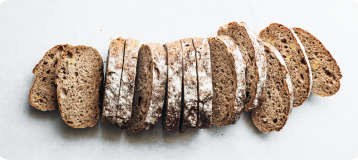

Somos Sofía y Lucas, y en 2019 decidimos iniciar un negocio de gastronomía después de
recibir el apoyo de otros que disfrutaban de nuestra cocina.
Todo comenzó cuando a Sofía le diagnosticaron celiaquía durante la pandemia, lo que hizo que cambiáramos
nuestra forma de cocinar, y asimismo que reinventáramos Soylu a través de un nuevo menú sin gluten.
Para esto Lucas empezó a estudiar Gastronomía Profesional para mejorar nuestra oferta y lograr que los
clientes que no puedan comer gluten se sientan seguros comiendo en Soylu.
En Soylu amamos lo que hacemos y por eso queremos transmitir seguridad y confianza en cada en cada plato que
hacemos para nuestros clientes.